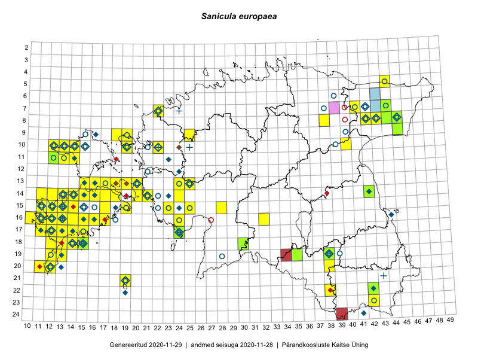

Sanicula europaea
Uuendatud: 2016-12-01
Kaardile koondatud taksonid: Sanicula europaea L.

Kaart põhineb 137 kirjel, neist vaatlusi 134 ja eksemplare 3.
Kuvatud viited 20 esimesele andmebaasikirjele, ülejäänud PlutoFis
- Toomas Kukk, Raivo Kalle: 2015-05-12: 10-40: ala
- Peedu Saar, Ott Luuk: 2015-06-21: 14-42: ala
- Toomas Kukk, Peedu Saar: 2014-07-09: 08-44: ala
- Peedu Saar, Ott Luuk: 2015-08-12: 23-42: GPS punkt
- Peedu Saar, Ott Luuk: 2015-08-12: 23-42: ala
- Toomas Kukk: 2014-06-18: 18-15: ala
- Toomas Kukk: 2014-06-18: 18-14: ala
- Tiit Hallikma, Toomas Kukk: 2015-07-20: 07-44: ala
- Tiit Hallikma, Toomas Kukk: 2015-07-20: 07-44: GPS punkt
- Ott Luuk: 2015-07-01: 15-11: GPS punkt
- Ott Luuk, Elle Roosaluste, Jaak-Albert Metsoja: 2015-06-17: 14-18: ala
- Ott Luuk, Elle Roosaluste, Jaak-Albert Metsoja: 2015-06-16: 18-15: ala
- Peedu Saar: 2015-09-07: 16-17: ala
- Peedu Saar: 2015-10-01: 22-38: ala
- Peedu Saar: 2015-10-01: 22-38: GPS punkt
- Peedu Saar, Ott Luuk: 2015-10-22: 08-42: ala
- Thea Kull, Eerik Leibak: 2016-07-24: 08-43: ala
- Meeli Mesipuu, Kadri Tali: 2015-07-08: 13-17: ala
- Meeli Mesipuu, Kadri Tali: 2015-07-08: 13-17: GPS punkt
- Ott Luuk, Hannes Pehlak: 2015-06-12: 19-35: ala